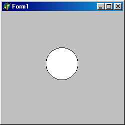

TShape - стандартная фигура
 Компонент рисует одну из простейших геометрических фигур, определяемых следующим множеством:
type TShapeType = (stRectangle, stSquare, stRoundRect, stRoundSquare, stEllipse, stCircle) ;
(прямоугольник, квадрат, скругленный прямоугольник, скругленный квадрат, эллипс, окружность). Фигура полностью занимает все пространство компонента. Если задан квадрат или круг, а размеры элемента по горизонтали и вертикали отличаются, фигура чертится с размером меньшего измерения.
Помимо стандартных чертежных инструментов Brush и pen (шрифт для компонента не нужен) в компоненте определено свойство shape.' TShapeType, которое и задает вид геометрической фигуры. Изменение этого свойства приводит к немедленной перерисовке изображения.